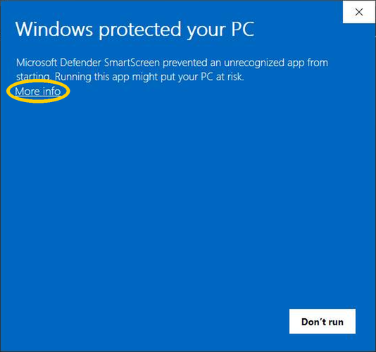
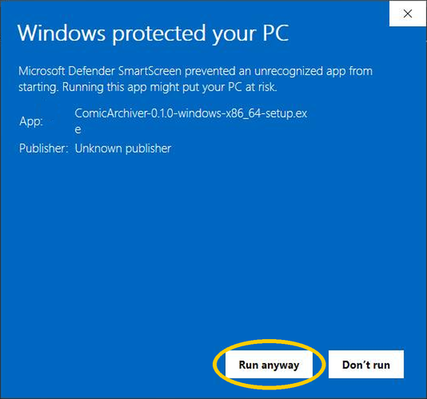

There's no Android app yet. Comic Archiver runs on Windows, Linux and Mac computers: download it on one of those.
There's no app for iPhone or iPad. Comic Archiver runs on Windows, Linux and Mac computers: download it on one of those.
Mac
Intel processor, macOS 13 or newer · 476 MB
Download appEarly Mac version: not notarized by Apple, tested on macOS 15 only. Apple silicon is not available yet.
Android Beta
Android 15 or newer · version {android_version}
Download the appStill being tested. How to install it.
Checksums: SHA256SUMS.txt · This release on GitHub
Installing and updating
Windows: install and update
The app is not signed yet, so Windows warns about it twice. Both warnings are expected.
- If Edge says the file "isn't commonly downloaded", point at the download, choose …, then Keep. If it asks again, choose Show more, then Keep anyway.
- Run the setup file. If Windows says "Windows protected your PC", its only button is Don't run. Don't press it. Click the small More info link under the message instead:

- A Run anyway button then appears beside Don't run. Click Run anyway:

It installs Comic Archiver for your own account and never asks for an administrator. If Windows says Smart App Control blocked it and there is no Run anyway, Comic Archiver can't be installed on that PC yet.
To update, run the new setup file over the old version; don't uninstall first. You stay signed in, and your settings and saved episodes stay.
Linux: install and update
Unpack the file, open the folder and double-click comic-archiver (choose "Run" if asked). After the first start it is in your applications menu.
To update, close Comic Archiver, unpack the new version and start it: it offers to delete the older copy, and you keep your sign-ins and settings. To uninstall, right-click Comic Archiver in the applications menu, choose Uninstall, then delete the folder.
Mac: install and update
Apple has not notarized the app, so macOS will not open it until you allow it once.
- Open the downloaded ZIP file, then drag Comic Archiver into your Applications folder.
- Open Comic Archiver. macOS says it could not verify the app. Choose Done, not Move to Trash.
- Open System Settings, choose Privacy & Security and scroll down to Security. Beside the message about Comic Archiver, choose Open Anyway, then confirm with your password or Touch ID.
After that it opens normally. To update, close Comic Archiver and replace the app in Applications with the new one; macOS asks you to allow the new version once more.